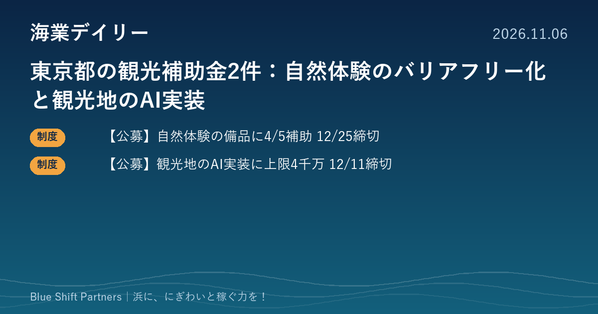

2026.11.06
東京都の観光補助金2件：自然体験のバリアフリー化と観光地のAI実装

本日は、東京都産業労働局が募集している観光分野の補助金を2件お届けします。ひとつは自然体験の受け入れ設備を整える補助、もうひとつは事業者がグループで観光地にAIなどを入れる補助です。どちらも漁港周辺の体験・飲食・宿泊の事業者が使い道を描きやすい制度です。
【公募】東京都「誰もが楽しめる自然体験型観光推進事業補助金」12/25必着
東京都産業労働局が、障害のある人なども東京の自然を楽しめる体験型観光を広げるため、都内の自然体験型観光提供事業者と、事業者に備品を無償で貸し出す都内の観光協会等を対象に補助金を募集しています。対象経費は障害者等向け備品の購入費、手持ちの備品を障害者等向けに改造する費用、施設整備費で、補助率は5分の4、上限は備品の購入・改造のみなら200万円、施設整備を伴う場合は500万円です。締切は令和8年12月25日（金）必着で、予算額に達した時点で受付を終了します。申請は簡易書留での郵送、jGrants、または持参で、窓口は同局観光部受入環境課です。
ここがポイント：都のページでは、水陸両用車椅子、車椅子の方向けのスタンドアップパドルボードの改造、船舶に付ける車椅子の固定具や乗船用スロープが備品の例に挙がっています。都内でマリン体験や乗船体験を提供する事業者・観光協会が、受け入れの幅を広げる設備投資に充てられます。
出典：東京都産業労働局「誰もが楽しめる自然体験型観光推進事業補助金」（2026-11-06）
【公募】東京都「AI等先端技術を活用した受入環境高度化支援事業」12/11必着
東京都産業労働局が、エリア単位で複数の事業者が連携し、AIなどの先端技術を実装して観光地の付加価値を高める取組への補助金を募集しています。対象は2者以上の都内事業者で構成するグループで、機械設備導入費（購入・リース等）、システム等導入経費、専門家指導費が対象、補助率は2分の1以内、上限は4,000万円です。募集期間は令和8年11月4日から12月11日（金）必着で、申請には個別説明会への参加が必須です（予約は11月27日（金）まで）。申請はLoGoフォームによる電子申請か簡易書留での郵送で、窓口は同局観光部受入環境課です。
ここがポイント：漁港周辺の直売所・食堂・遊漁船・宿などがグループを組み、例えば多言語の案内や混雑・待ち時間の見える化、予約の一元化などにAIを入れる場合の資金源になります。単独では申請できないため、説明会の予約期限（11/27）までに組む相手を決めておくことが肝心です。
出典：東京都産業労働局「AI等先端技術を活用した受入環境高度化支援事業」（2026-11-04）
海の体験は、乗り降りや移動の段差ひとつで参加をあきらめる人がいます。設備を整えることは、家族連れや高齢の方、海外からの旅行者まで客層を広げる投資でもあります。補助率の高い今回の制度は、浜の体験事業の「受け入れる力」を上げる好機です。